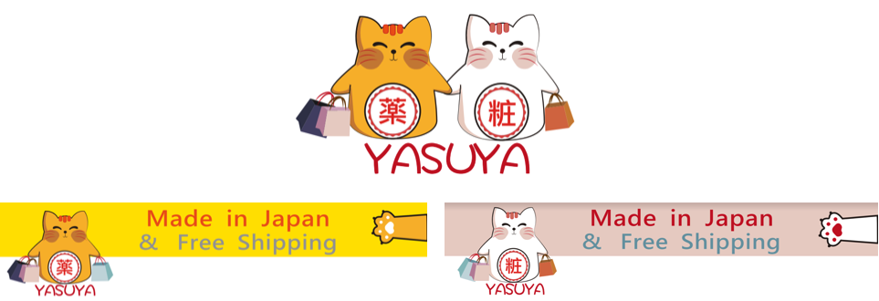
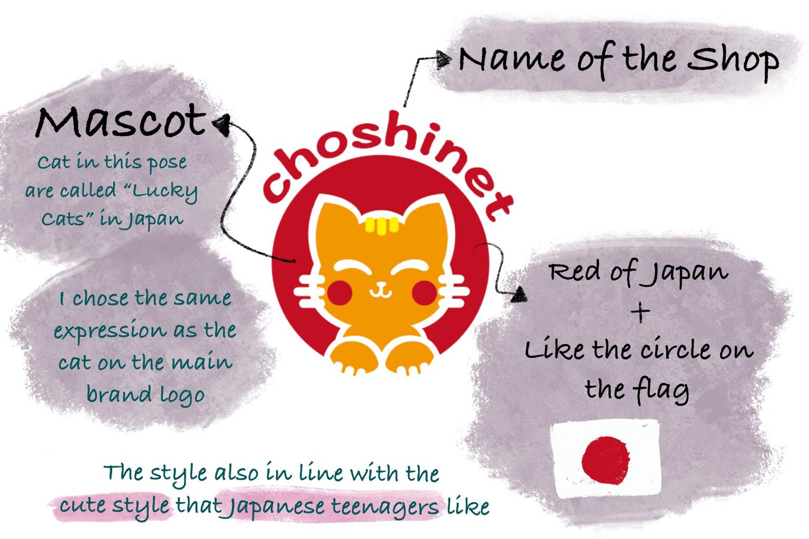

Online Visual Design
This program is about creating a series of online visual designs based on the client’s desired style and analyses of the brand’s customer base. The process involves working with the brand engineer to create a banner that works for many websites and its logo and icon after the main style is confirmed.
Client Setting
Style requirement: The client provides Don Quixote as an avatar template.
Color requirement: Bright, high color saturation.
Target customers: Southeast Asians who need a purchasing agent for Japanese products.
Reference image from customer:
Element Setting
Japanese shop customers choose cats. I designed a smiley fat cat that beckons fortune.
Color Palette: Southeast Asian customers prefer bright colors that still conform to the Japanese style, which is the color palette I used for my composition to generate the desired Japanese style.
Most websites are presented with scrolling banners, but the engineer produces the effect with three prints. I use a visually pleasing visualization, i.e., three standalone prints that form a new image when put together.

Sub-brand Design
For similar merchandise, targeting young female customers.
